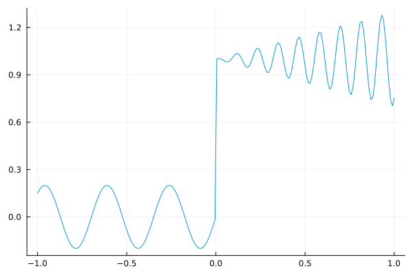
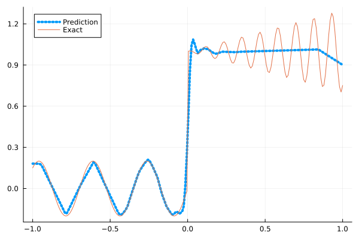
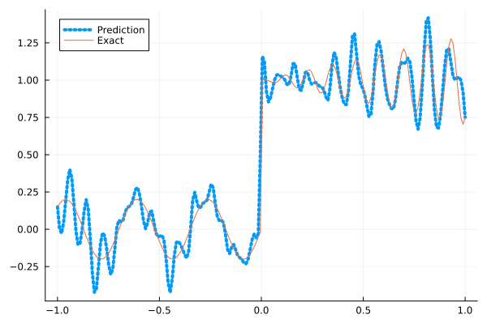
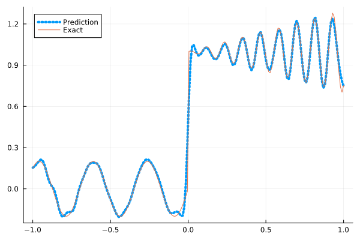
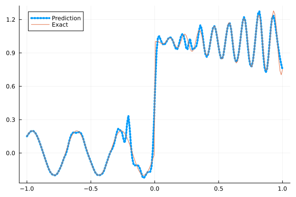
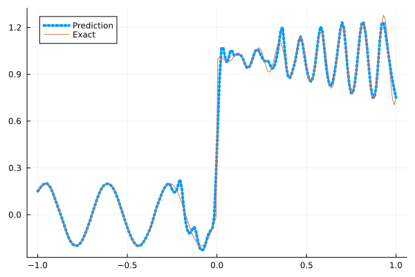

Fitting a nonlinear discontinuous function
This example is taken from here. However, we do not use adaptive activation functions. Instead, we show that using suitable non-parametric activation functions immediately performs better.
Consider the following discontinuous function with discontinuity at $x=0$:
\[u(x)= \begin{cases}0.2 \sin (18 x) & \text { if } x \leq 0 \\ 1+0.3 x \cos (54 x) & \text { otherwise }\end{cases}\]
The domain is $[-1,1]$. The number of training points used is 50.
Import pacakges
using Lux, Sophon
using NNlib, Optimisers, Plots, Random, StatsBase, ZygoteDataset
function u(x)
if x <= 0
return 0.2 * sin(18 * x)
else
return 1 + 0.3 * x * cos(54 * x)
end
end
function generate_data(n=50)
x = reshape(collect(range(-1.0f0, 1.0f0, n)), (1, n))
y = u.(x)
return (x, y)
endgenerate_data (generic function with 2 methods)Let's visualize the data.
x_train, y_train = generate_data(50)
x_test, y_test = generate_data(200)
Plots.plot(vec(x_test), vec(y_test),label=false)
Naive Neural Nets
First we demonstrate show naive fully connected neural nets could be really bad at fitting this function.
model = FullyConnected((1,50,50,50,50,1), relu)Chain(
layer_1 = Dense(1 => 50, relu), # 100 parameters
layer_2 = Dense(50 => 50, relu), # 2_550 parameters
layer_3 = Dense(50 => 50, relu), # 2_550 parameters
layer_4 = Dense(50 => 50, relu), # 2_550 parameters
layer_5 = Dense(50 => 1), # 51 parameters
) # Total: 7_801 parameters,
# plus 0 states, summarysize 80 bytes.Train the model
function train(model, x, y)
ps, st = Lux.setup(Random.default_rng(), model)
opt = Adam()
st_opt = Optimisers.setup(opt,ps)
function loss(model, ps, st, x, y)
y_pred, _ = model(x, ps, st)
mes = mean(abs2, y_pred .- y)
return mes
end
for i in 1:2000
gs = gradient(p->loss(model,p,st,x,y), ps)[1]
st_opt, ps = Optimisers.update(st_opt, ps, gs)
if i % 100 == 1 || i == 2000
println("Epoch $i || ", loss(model,ps,st,x,y))
end
end
return ps, st
endtrain (generic function with 1 method)Plot the result
@time ps, st = train(model, x_train, y_train)
y_pred = model(x_test,ps,st)[1]
Plots.plot(vec(x_test), vec(y_pred),label="Prediction",line = (:dot, 4))
Plots.plot!(vec(x_test), vec(y_test),label="Exact",legend=:topleft)Epoch 1 || 1.281023103940007
Epoch 101 || 0.019728475440113916
Epoch 201 || 0.015779058083877077
Epoch 301 || 0.015125030652499476
Epoch 401 || 0.01450193313241829
Epoch 501 || 0.013711201161547585
Epoch 601 || 0.013193987664619069
Epoch 701 || 0.012937260655771714
Epoch 801 || 0.012788024980794703
Epoch 901 || 0.012659608807562825
Epoch 1001 || 0.012452493307084679
Epoch 1101 || 0.012427510363625972
Epoch 1201 || 0.012148425038785455
Epoch 1301 || 0.011763560743684998
Epoch 1401 || 0.011166253546578972
Epoch 1501 || 0.010039654195931646
Epoch 1601 || 0.009083333647990431
Epoch 1701 || 0.008482251823146705
Epoch 1801 || 0.008224484276529432
Epoch 1901 || 0.007712668695958742
Epoch 2000 || 0.0074785637277902176
11.627688 seconds (13.17 M allocations: 1.485 GiB, 5.35% gc time, 91.31% compilation time)
Siren
We use four hidden layers with 50 neurons in each.
model = Siren(1,50,50,50,50,1; omega = 30f0)Chain(
layer_1 = Dense(1 => 50, sin), # 100 parameters
layer_2 = Dense(50 => 50, sin), # 2_550 parameters
layer_3 = Dense(50 => 50, sin), # 2_550 parameters
layer_4 = Dense(50 => 50, sin), # 2_550 parameters
layer_5 = Dense(50 => 1), # 51 parameters
) # Total: 7_801 parameters,
# plus 0 states, summarysize 88 bytes.@time ps, st = train(model, x_train, y_train)
y_pred = model(x_test,ps,st)[1]
Plots.plot(vec(x_test), vec(y_pred),label="Prediction",line = (:dot, 4))
Plots.plot!(vec(x_test), vec(y_test),label="Exact",legend=:topleft)Epoch 1 || 0.909616236039989
Epoch 101 || 0.0007848184133906122
Epoch 201 || 1.2065983419774016e-5
Epoch 301 || 3.339477141109637e-7
Epoch 401 || 1.7104694934062762e-8
Epoch 501 || 5.772118979381201e-10
Epoch 601 || 1.3667156250360658e-11
Epoch 701 || 6.968021286352192e-13
Epoch 801 || 1.3358621650433936e-13
Epoch 901 || 3.6028841902957076e-14
Epoch 1001 || 3.499023397838628e-14
Epoch 1101 || 2.802568825312711e-14
Epoch 1201 || 5.599405348957784e-14
Epoch 1301 || 3.735560520028147e-14
Epoch 1401 || 3.171225654796318e-14
Epoch 1501 || 3.803611374489362e-14
Epoch 1601 || 4.04326715349374e-14
Epoch 1701 || 4.624022220271167e-14
Epoch 1801 || 4.790988640040698e-14
Epoch 1901 || 5.865626606043759e-14
Epoch 2000 || 5.708690444716899e-14
5.940046 seconds (8.16 M allocations: 1.298 GiB, 5.26% gc time, 81.35% compilation time)
As we can see the model overfits the data, and the high frequencies cannot be optimized away. We need to tunning the hyperparameter omega
model = Siren(1,50,50,50,50,1; omega = 10f0)Chain(
layer_1 = Dense(1 => 50, sin), # 100 parameters
layer_2 = Dense(50 => 50, sin), # 2_550 parameters
layer_3 = Dense(50 => 50, sin), # 2_550 parameters
layer_4 = Dense(50 => 50, sin), # 2_550 parameters
layer_5 = Dense(50 => 1), # 51 parameters
) # Total: 7_801 parameters,
# plus 0 states, summarysize 88 bytes.@time ps, st = train(model, x_train, y_train)
y_pred = model(x_test,ps,st)[1]
Plots.plot(vec(x_test), vec(y_pred),label="Prediction",line = (:dot, 4))
Plots.plot!(vec(x_test), vec(y_test),label="Exact",legend=:topleft)Epoch 1 || 0.27829494086156586
Epoch 101 || 0.006105641830529219
Epoch 201 || 0.004030684598583326
Epoch 301 || 0.0026409944479868475
Epoch 401 || 0.0014691499750786917
Epoch 501 || 0.00046861050241346153
Epoch 601 || 0.00010340982323583884
Epoch 701 || 4.52688689153162e-5
Epoch 801 || 3.0498837993323718e-5
Epoch 901 || 0.00020293405463980399
Epoch 1001 || 1.9677648005180288e-5
Epoch 1101 || 0.001001186558367856
Epoch 1201 || 1.4774377922480502e-5
Epoch 1301 || 0.0013193938827145662
Epoch 1401 || 1.196847891025918e-5
Epoch 1501 || 1.096003295108297e-5
Epoch 1601 || 1.135648367128149e-5
Epoch 1701 || 9.24373031673636e-6
Epoch 1801 || 8.48545890352126e-6
Epoch 1901 || 7.686150135778435e-6
Epoch 2000 || 4.528843057957931e-5
0.902383 seconds (1.15 M allocations: 892.492 MiB, 5.72% gc time)
Gaussian activation function
We can also try using a fully connected net with the gaussian activation function.
model = FullyConnected((1,50,50,50,50,1), gaussian)Chain(
layer_1 = Dense(1 => 50, gaussian), # 100 parameters
layer_2 = Dense(50 => 50, gaussian), # 2_550 parameters
layer_3 = Dense(50 => 50, gaussian), # 2_550 parameters
layer_4 = Dense(50 => 50, gaussian), # 2_550 parameters
layer_5 = Dense(50 => 1), # 51 parameters
) # Total: 7_801 parameters,
# plus 0 states, summarysize 80 bytes.@time ps, st = train(model, x_train, y_train)
y_pred = model(x_test,ps,st)[1]
Plots.plot(vec(x_test), vec(y_pred),label="Prediction",line = (:dot, 4))
Plots.plot!(vec(x_test), vec(y_test),label="Exact",legend=:topleft)Epoch 1 || 0.29675857607779677
Epoch 101 || 0.004738895089390191
Epoch 201 || 0.004059447798735603
Epoch 301 || 0.0037895893203655374
Epoch 401 || 0.0027913848268230814
Epoch 501 || 0.0003645092536161615
Epoch 601 || 4.585084862368418e-6
Epoch 701 || 2.2442260012777005e-7
Epoch 801 || 1.175731001820773e-6
Epoch 901 || 2.255240229069174e-8
Epoch 1001 || 1.8645139255121297e-9
Epoch 1101 || 6.885945272834697e-5
Epoch 1201 || 6.749746175158728e-8
Epoch 1301 || 5.054730178668636e-10
Epoch 1401 || 4.01906654070648e-11
Epoch 1501 || 1.486921938549669e-11
Epoch 1601 || 3.388847133765704e-6
Epoch 1701 || 2.4149166799307326e-9
Epoch 1801 || 5.88291315228301e-10
Epoch 1901 || 0.00033584669438900235
Epoch 2000 || 1.2133178988037801e-8
5.593754 seconds (7.29 M allocations: 1.252 GiB, 4.87% gc time, 79.72% compilation time)
Quadratic activation function
quadratic is much cheaper to compute compared to the Gaussain activation function.
model = FullyConnected((1,50,50,50,50,1), quadratic)Chain(
layer_1 = Dense(1 => 50, quadratic), # 100 parameters
layer_2 = Dense(50 => 50, quadratic), # 2_550 parameters
layer_3 = Dense(50 => 50, quadratic), # 2_550 parameters
layer_4 = Dense(50 => 50, quadratic), # 2_550 parameters
layer_5 = Dense(50 => 1), # 51 parameters
) # Total: 7_801 parameters,
# plus 0 states, summarysize 80 bytes.@time ps, st = train(model, x_train, y_train)
y_pred = model(x_test,ps,st)[1]
Plots.plot(vec(x_test), vec(y_pred),label="Prediction",line = (:dot, 4))
Plots.plot!(vec(x_test), vec(y_test),label="Exact",legend=:topleft)Epoch 1 || 0.5629289101388014
Epoch 101 || 0.007657589588049054
Epoch 201 || 0.006700984937524337
Epoch 301 || 0.006312097117037983
Epoch 401 || 0.006023789230807015
Epoch 501 || 0.005489501001140068
Epoch 601 || 0.004860176006410154
Epoch 701 || 0.003678553786119609
Epoch 801 || 0.0018846013408771053
Epoch 901 || 0.0006223416429043848
Epoch 1001 || 0.000166099600028334
Epoch 1101 || 5.864335190488101e-5
Epoch 1201 || 2.8245860479097616e-6
Epoch 1301 || 1.863430387632645e-7
Epoch 1401 || 1.3174530460048353e-7
Epoch 1501 || 1.913211445792218e-7
Epoch 1601 || 5.873411358608528e-6
Epoch 1701 || 7.566548582976404e-7
Epoch 1801 || 0.00013849214206264088
Epoch 1901 || 0.0001312935709859921
Epoch 2000 || 1.967513347275843e-8
4.976598 seconds (7.04 M allocations: 1.235 GiB, 5.34% gc time, 85.99% compilation time)
Conclusion
"Neural networks suppresse high frequency components" is a misinterpretation of the spectral bias. The accurate way of putting it is that the lower frequencies in the error are optimized first in the optimization process. This can be seen in Siren's example of overfitting data, where you do not have implicit regularization. The high frequency in the network will never go away because it has fitted the data perfectly.
Mainstream attributes the phenomenon that neural networks "suppress" high frequencies to gradient descent. This is not the whole picture. Initialization also plays an important role. Siren mitigats this problem by initializing larger weights in the first layer, while activation functions such as gassian have large enough gradients and sufficiently large support of the second derivative with proper hyperparameters. Please refer to Vincent Sitzmann, Julien Martel, Alexander Bergman, David Lindell, Gordon Wetzstein (2020), Sameera Ramasinghe, Simon Lucey (2021) and Sameera Ramasinghe, Lachlan MacDonald, Simon Lucey (2022) if you want to dive deeper into this.